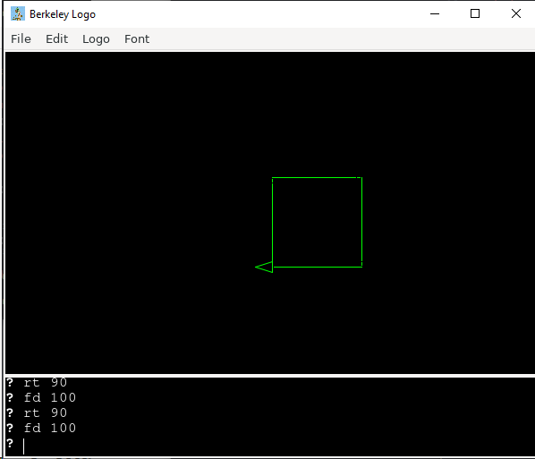
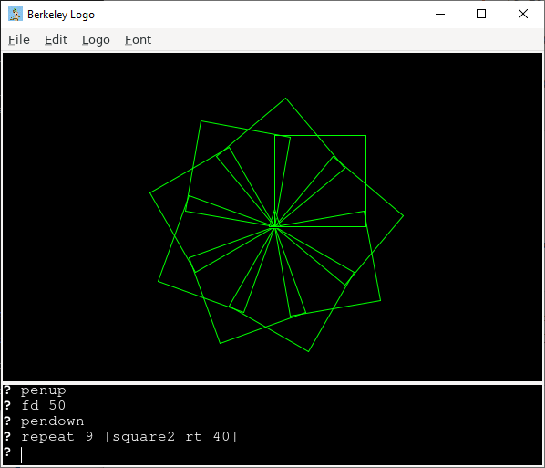

LOGO the language was created in the 1970s to teach programming. Logo is a turtle that can be programmed to draw things. A good introduciton with basic commands is on Wikipedia
LOGO is an interpred language. Just type commands into the windows and tell the turtle what to do.
Let's start with a simple program that draws a square.
pencolor 2 fd 100 rt 90 fd 100 rt 90 fd 100 rt 90 fd 100 rt 90square1.logo

That's too much typing. Let's use a loop. Which is repeat in LOGO.
clearscreen pencolor 2 repeat 4 [fd 100 rt 100]
Let's give this code a name so we can re-use it. In LOGO, functions look like this:
to SQUARE repeat 4 [fd 100 rt 90] end
Now we can draw as many squares as we want. We'll just start a little higher,
using penup to make LOGO pick up his pen before we move and pendown
to put it back on the paper before we draw 9 squares.
clearscreen penup fd 50 pendown repeat 9 [square rt 40]square2.logo
